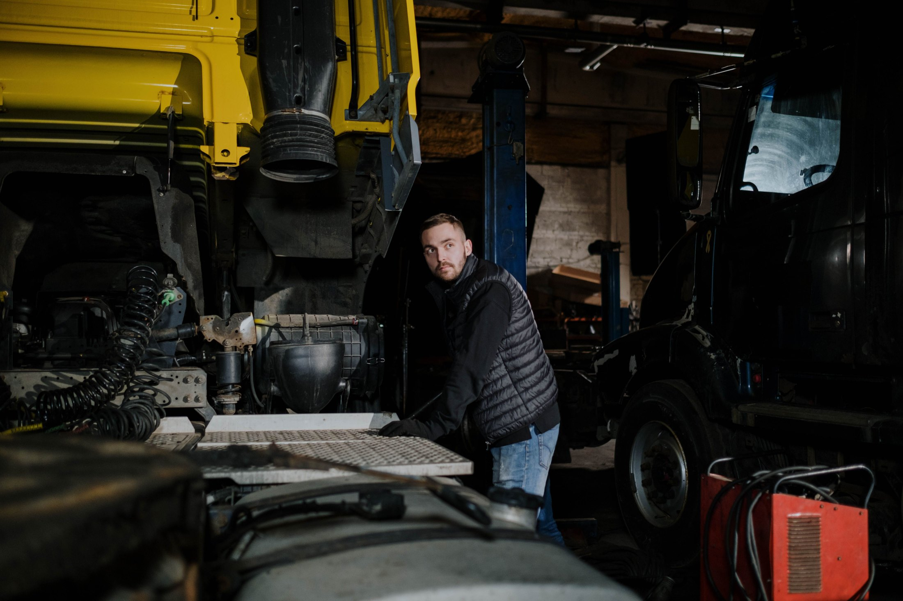
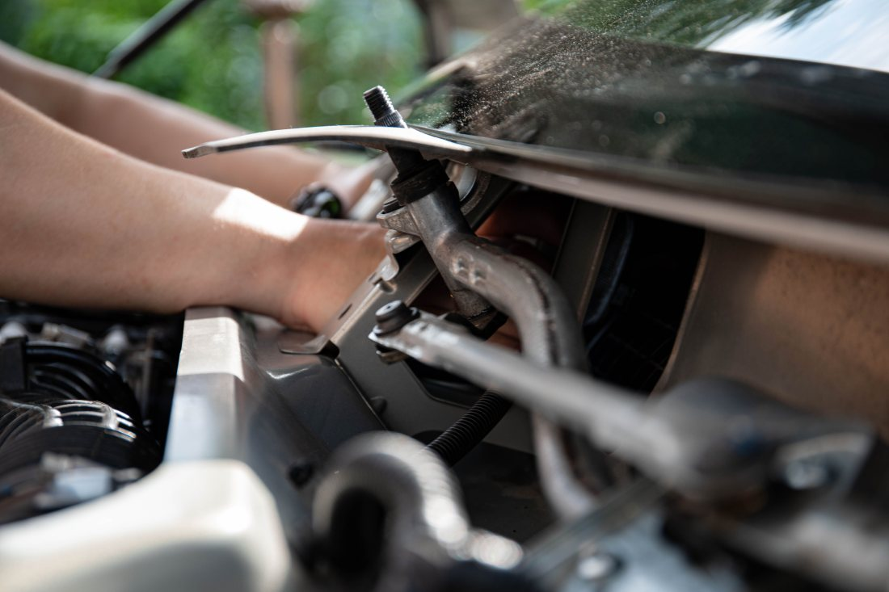
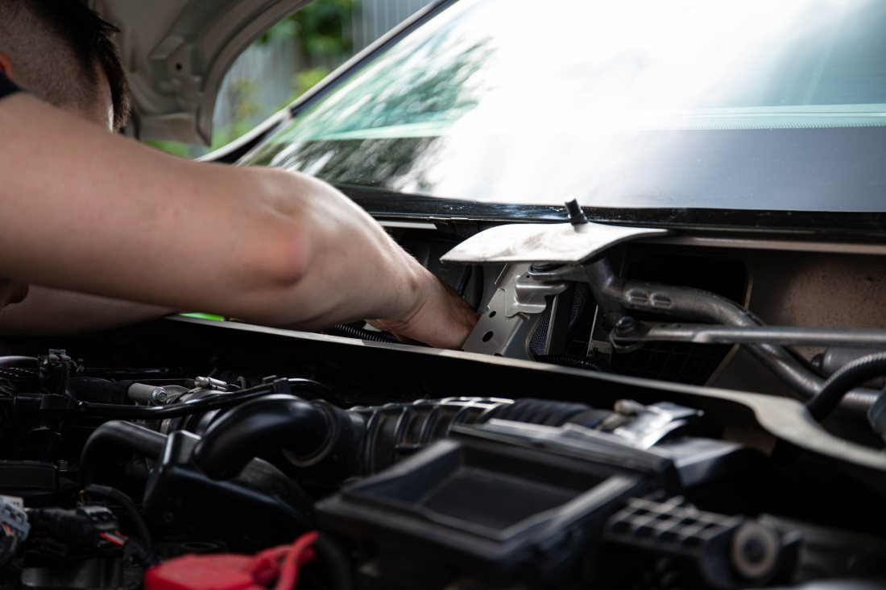
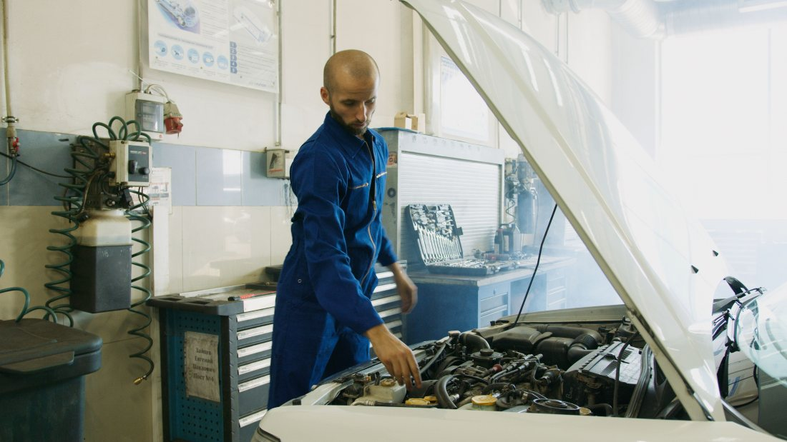
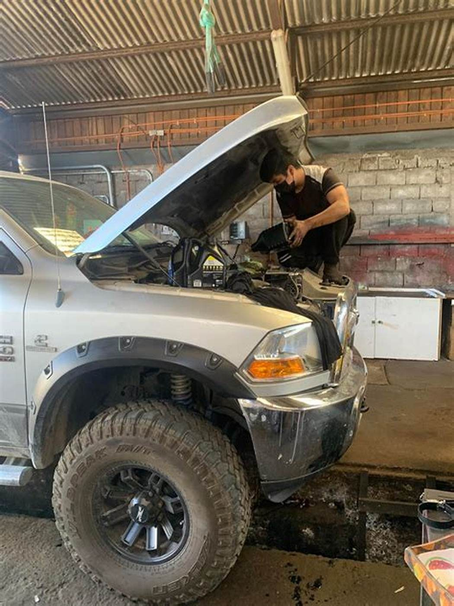
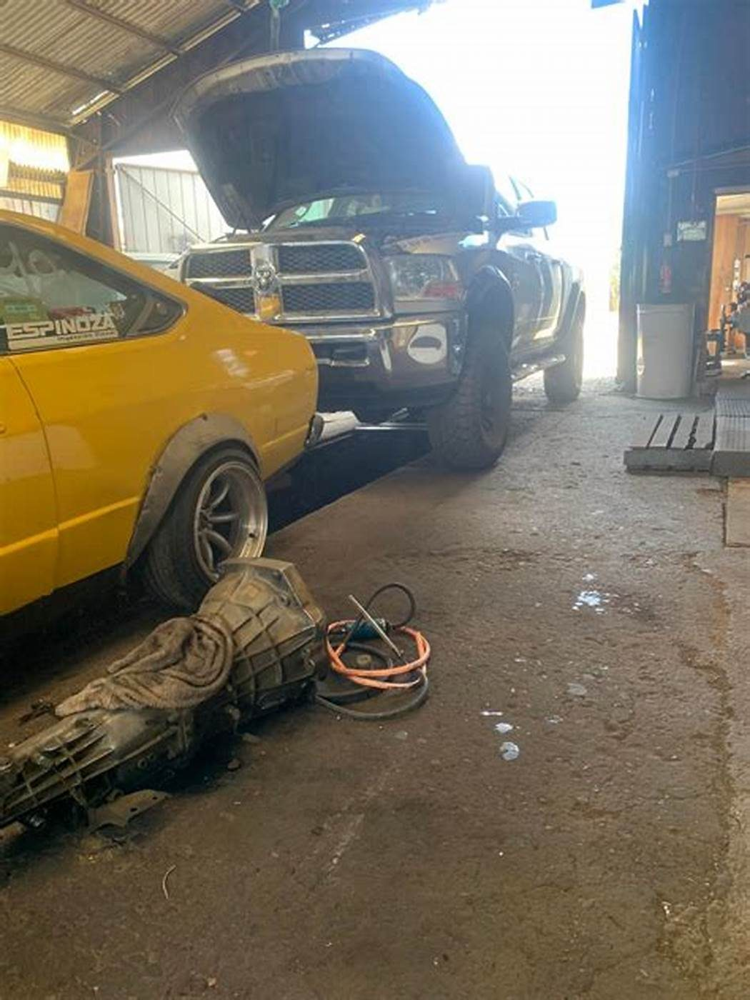
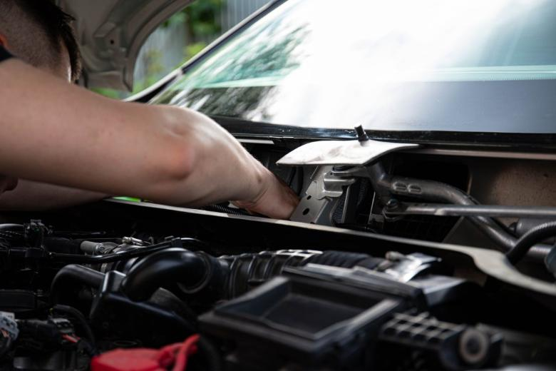
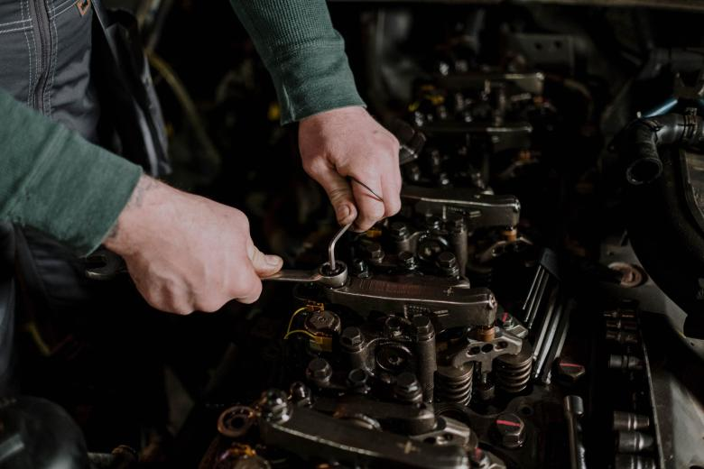
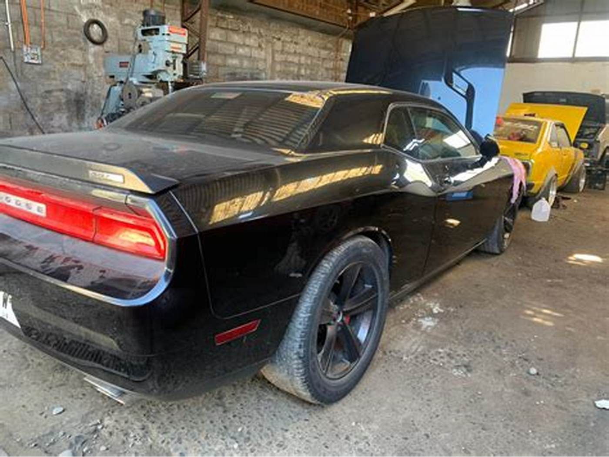

Quién
Quién es Schuster
falta: nombre completo, desde cuándo trabaja en esto y desde cuándo existe el taller. No lo invento.
Propuesta de sitio web — preparada para Schuster Mecánica Automotriz por CristalWeb
4,9 en el rubro con más desconfianza del país. Y el auto que tiene revisión técnica el mes que viene no sabe que acá se la pueden preparar — porque no hay dónde leerlo.
Mecánica automotriz · Temuco
Es la pregunta que aparece cuando queda un mes en el parabrisas, y la que casi nadie contesta por escrito. Lo que la planta mira es siempre lo mismo, se sabe de antemano, y revisarlo antes es la diferencia entre pasar de una o perder la mañana y pagar de nuevo.
Lo que se sabe y nadie escribe
Esto es lo general del oficio: los puntos que se revisan en toda planta y los motivos de rechazo más comunes. No hay ninguna norma citada por número —eso lo dice la planta, no un taller— y la lista de lo que se prepara acá la confirma el taller.
| Qué miran | Por qué rechaza | Se prepara acá |
|---|---|---|
| Luces | Una ampolleta quemada, un foco opaco o las luces desalineadas. Es el rechazo más común y el más barato de evitar. | falta |
| Frenos | Que frene desparejo entre un lado y el otro, o que no alcance la fuerza de frenado en el banco. También el freno de mano. | falta |
| Neumáticos | Dibujo bajo el mínimo, cortes, deformaciones o una rueda distinta a las otras del mismo eje. | falta |
| Emisiones | Que el gas se pase de lo permitido. Suele venir de una mantención atrasada, de un filtro sucio o de algo del sistema que ya venía fallando. | falta |
| La luz del motor encendida | Va encendida en el tablero y eso solo puede rechazar. No se apaga con un escáner: hay que ver por qué se prendió. | falta |
| Dirección y suspensión | Juego en la dirección, amortiguadores vencidos, ruidos. Se nota en el banco de suspensión aunque el auto se sienta bien al manejar. | falta |
| Parabrisas y limpiaparabrisas | Trizaduras en el campo de visión del conductor y plumillas que no barren. | falta |
| Cinturones y bocina | Cinturón que no traba o está cortado, bocina que no suena. Chicos, y rechazan igual. | falta |
Una revisión previa en taller cuesta una fracción de lo que cuesta volver a la planta, y sobre todo evita el segundo día perdido. falta: si ofrecen una revisión previa y qué incluye
Ningún taller de la zona tiene esta tabla publicada, y es exactamente lo que la gente busca el mes antes. Una vez escrita, sirve todos los años y para todos los autos.

Lo que pasa antes de la planta
La planta mira siempre lo mismo, y todo eso se puede comprobar antes en el taller: luces, frenos, gases, holguras, neumáticos. Quien llega con la revisión preparada pasa de una; quien llega a probar suerte pierde la mañana, paga de nuevo y vuelve igual. La cuenta se hace sola.
Un taller con apellido
Cuando un taller lleva el apellido de alguien, ese alguien responde por lo que sale del portón. Es una diferencia real frente a una cadena, y es lo único que un cliente nuevo quiere saber antes de dejar su auto.
Quién
falta: nombre completo, desde cuándo trabaja en esto y desde cuándo existe el taller. No lo invento.
Quién atiende
falta: si atiende él o hay mesón, y quién explica el presupuesto
Qué se hace acá
falta: qué trabajos hacen y cuáles derivan
La palabra
falta: cómo lo resuelven — es la pregunta que nadie hace en voz alta y todos piensan
Los cuatro recuadros están vacíos porque no me consta ninguno de esos datos, y en un taller que lleva el apellido de una persona inventarlos sería una falta grave. La tabla de la revisión es información general del proceso: no cita ninguna norma por número y no reemplaza lo que diga la planta.
¿Pasará la revisión técnica?
Se sabe de antemano. Ése es todo el punto
Para consultar o dejar el auto
Es el número publicado en su ficha de Google.



Fotos publicadas por el propio taller en su Facebook. No hay galpón de vidrio ni mecánicos de catálogo: es el piso de tierra, el techo de zinc y los autos que están adentro hoy.


falta: una foto del auto entregado, limpio y en la calle. El antes está; falta el después, que es la mitad que vende.
Estas seis ya aparecen más arriba en la página. Vuelven acá en otro tamaño porque una sola pasada de imágenes deja el scroll vacío, y porque de cerca se ven cosas que en grande se pierden. La procedencia de cada una está en imagenes/FUENTES.txt.



El 4,9 con 80 reseñas de su ficha de Google y el teléfono 9 5482 7893. La ficha aparece dos veces en el listado con el mismo número: es un solo taller.
La tabla completa. Son los puntos que revisa cualquier planta y los motivos de rechazo más conocidos del oficio, sin ninguna norma citada.
Dos cosas: marcar en la tabla qué preparan ustedes —esa columna sola es la que convierte la página en un servicio— y los cuatro datos del apellido. Ninguno lo inventé.